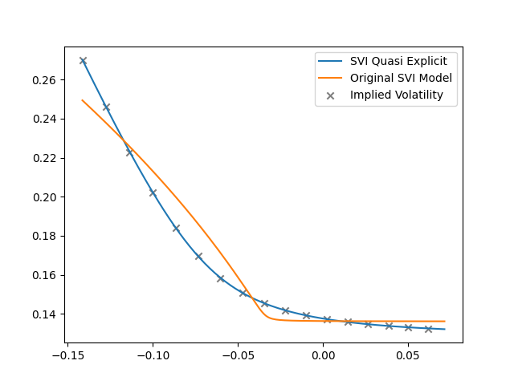
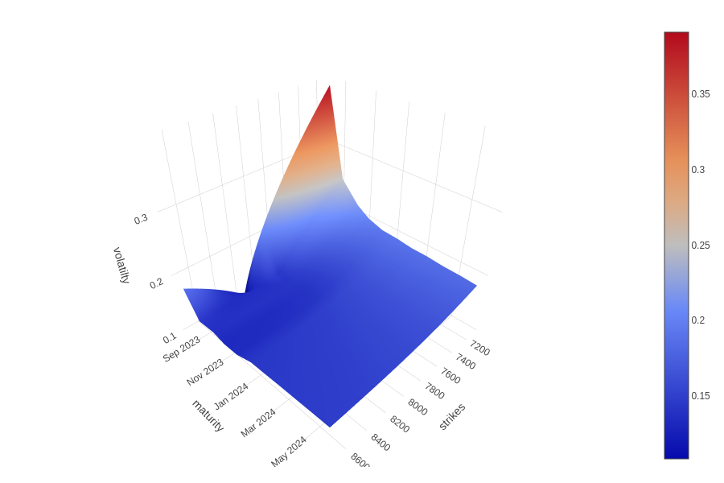
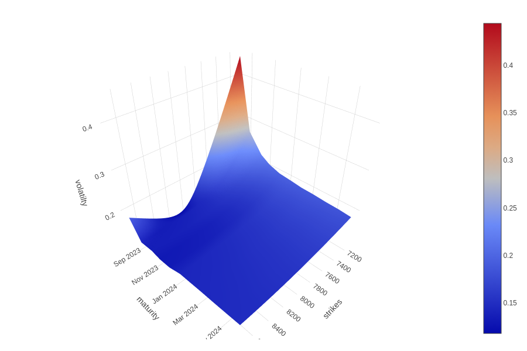

Quasi-Explicit SVI技术文档#
SVI 模型回顾#
SVI (Stochastic Volatility Inspired) 模型由 Gatheral (2004) 提出，用于描述隐含波动率的微笑形状，该模型表现形式为：
其中，\(x\) 是对数moneyness, 即 \( \log(\frac{K}{F_T})\) ， \(K\) 为行权价， \(F_T\) 为到期时的标的资产的远期价格。SVI模型中的参数控制隐含波动率曲线的形态和特点，具体如下：
\(a\) 表示隐含波动率的基准水平，调整 \(a\) 的值会导致整条曲线在垂直方向上移动;
\(b\) 表示波动率微笑的振幅，即控制曲线在左右两端渐近线之间的张开角度。\(b\)值的增加会减少这个角度，使曲线更为收敛;
\(\rho\) 表示微笑的倾斜度，即曲线的整体倾斜，调整 \(\rho\) 的值会产生对曲线的旋转效果;
\(m\) 定义曲线的水平中心位置，修改 \(m\) 会导致曲线在水平方向上的整体移位;
\(\sigma\) 表示微笑的宽度，即决定曲线定点附近的平滑度，较大的 \(\sigma\) 值会使曲线在这一区域更为平缓。
这些参数共同定义了隐含波动率的微笑形态，可以准确捕捉和再现市场上观察到的隐含波动率曲线。
Quasi-Explicit 模型#
在某些特定情况下，尤其是市场数据稀少或缺少远离moneyness的期权时，原始 SVI 模型有可能会产生无界隐含波动率或出现拟合失败的情形。为了解决这个问题，Zeliade Systems (2009) 提出 Quasi-Explicit SVI 模型。在 Quasi-Explicit 模型中，对上述 SVI 公式进行了改进，通过引入额外的到期日参数 \(T\) ，使模型更加灵活，并能够提供相对稳健的参数估计值进而适应各种市场条件。
Quasi-Explicit 是SVI的另一种形式，更适合于参数校准，对参数的定义与SVI原始公式略有不同：
Zeliade Systems (2009) 强调波动率的总方差 \( \tilde{v} = T v\) ， 因此SVI 参数形式转换为
此表达式清晰地展示了，对于固定的 \(m\) 和 \(\sigma\) 值，\(Tv\) 曲线能够完全由 \(a\)， \(\rho\) 以及 乘积 \(b\sigma\) 决定。因此，若重新定义参数为
那么， \(\tilde{v}(y)\) 呈线性依赖于 \(c\)， \(d\) ， \(a\) :
内层优化#
因此，对于固定值 \(m\) 和 \(\sigma\)，求解问题：
其中，\(f{y_i, v_i}\)为成本函数
\((c, d, \tilde{a})\) 的定义域 \(D\) 为
外层优化#
设 \((c^*, d^*, \tilde{a}^*)\) 代表 \(P_{m,\sigma}\)的解，并且 \((a^*, b^*, \rho ^*)\) 为对应三元组 \((a, b, \rho)\)， 那么完整的模型校准问题可表示为
到这一步骤之后，剩下的唯一任务即为求解二维方程 \(P_{m, \sigma}\) 。
降维问题的闭式解#
\(P_{m, \sigma}\) 是一个有着线性规划的凸优化问题，在容许域 \(D\) 中定义的所有约束条件均为线性的。显而易见，该方程有一个显示解。在外层优化中，由于成本函数 \(f\) 是关于 \((\sigma, m)\) 的非线性函数，\(f\) 会出现多个局部最小值。
针对外层优化，Zeliade Systems (2009) 推荐 Nelder-Mead Simplex (1965) 算法。在外层优化中，采用Nelder-Mead Simplex算法具有明显优势。该算法是一个无约束优化算法，能够处理非线性、非平滑的目标函数。其次，该方法不需要目标函数的导数信息，特别适用于导数难以计算或不存在的情形。另外，通过使用单纯形法的迭代搜索策略，它能够有效地搜索和收敛到函数的局部最小值。而且，Nelder-Mead 方法在多维度参数空间中表现稳健，尤其是在初值选择不是非常接近最优解的情况下，在实际外层优化问题中应用广泛 (Gao and Han, 2010)。
实证分析#
2D波动率曲线#
测试数据为2023年7月26日l2309期权的隐含波动率为例，日历日到期时长为 43.0， 无风险利率为0.02。
Quasi-SVI、SVI以及隐含波动率的对比结果如下：

3D波动率曲面#
测试数据为2023年7月26日聚乙烯期权的隐含波动率为例，日历日到期时长为 43.0， 无风险利率为0.02。
隐含波动率曲面如下：
原始SVI波动率曲面如下：

Quasi-explicit波动率曲面如下：

总结#
Quasi-Explicit SVI 在原始SVI的基础上，引入对到期日 \(T\) 的考虑，使得模型更加稳健并能够适应市场变化。其模型校准过程中同时考虑了全局和局部优化，确保能够更准确地捕捉市场上的隐含波动率曲线。
参考文献#
Gao, F. and Han, L. (2010) ‘Implementing the Nelder-Mead simplex algorithm with adaptive parameters’, Computational Optimization and Applications, 51(1), pp. 259-277.
Gatheral, J. (2004) ‘A parsimonious arbitrage-free implied volatility parameterization with application to the valuation of volatility derivatives’, Presentation at Global Derivatives & Risk Management, Madrid.
Nelder, J.A. and Mead, R. (1965) ‘A simplex method for function minimization’, The Computer Journal, 7(4), pp. 308-313.
Zeliade Systems (2009) Quasi-explicit calibration of Gatheral’s SVI model, Zeliade White Papers.